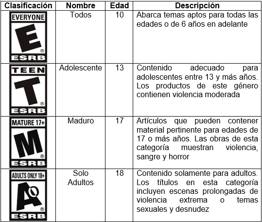

6 La influencia de los videojuegos en los más pequeños de la familia ¿positiva o negativa?
6.2 Artículo
Es común ver hoy en día, que los pequeños de la casa a partir de 5 a 12 años, prefieran recibir de regalo de navidad, una consola de video juegos en vez de un trompo, un yoyo, un carrito o algún juguete físico. En nuestros tiempos era tan común y tan esperado recibir alguna colección de carritos o un camioncito de madera, sirviendo como herramientas para complementar nuestra imaginación, haciéndonos pasar mucho tiempo de entretenimiento.
Sin embargo, no es que esto que está pasando sea malo, bueno o que las generaciones presentes sean personas sin imaginación, ni tampoco es culpa de los creadores de estos juegos de video, es algo natural que ha ido creciendo desde el principio de los tiempos, a esto le llamamos adaptación a la tecnología.
Es un tema muy extenso como complicado, pero podemos tocar algunos temas que seguramente nos harán pensar quizá de una forma distinta, en lugar de solo culpar o de aceptar sin poner atención a lo que está sucediendo realmente.
Actualmente vivimos en una época en donde todo lo que tocamos, usamos y construimos está fuertemente relacionado con la tecnología, y por qué no incluir también las formas de entretenimiento, hay muchas formas cada vez mejores y más entretenidas conforme pasan los años y los niños parecen tener un control implícito al nacer para manejar toda clase de aparatos.
Figura 6.1: Autor: www.npd.com https://www.npd.com/latest-reports/kids-and-ce-2014//images/header.jpg
{kind=link}
Este comportamiento es algo normal y pareciera que va aumentando progresivamente por lo que como padres, hermanos o familiares mayores debemos adaptarnos.
Personalmente he visto que los niños empiezan a mostrar un interés alto en los videojuegos a partir de los 3 a 5 años. Esto lo pude ver con la consola Nintendo Wii, que sus juegos están más orientados a los niños de esa edad, esta consola es del gusto de niños y niñas entre 3 y 12 años.
Cuando sobrepasan esa edad, en lugar de buscar alguna forma de jugar que no involucren juegos de video, solo cambian de consola de video, por una que satisfaga sus necesidades que son más específicas.
Lo que me he dado cuenta es que mientras más grandes son los jugadores, más crece la necesidad de jugar con juegos que incluyen violencia, esto a una edad mayor a los 19 años puede que sea asimilado de una buena forma, no siendo lo mismo si se le permite a un niño de corta edad, esto podría provocar trastornos.
Según un informe de NPD Group (expertos en información de mercado y servicios) en su artículo “Kids and Consumer Electronics Trends”: “en 2005 la edad media era de 8.1 años, en el 2007 en 6.7 años”.
DESVENTAJAS
- Una de las más grandes desventajas es la necesidad impulsiva de estar siempre jugando, poniendo en segundo plano la interacción familiar.
- Otra desventaja es que las compañías desarrolladoras de estos juegos, sacan con frecuencia juegos mejores y el jugador se siente obligado o con la necesidad de adquirir los juegos más novedosos, teniendo que gastar cantidades de dinero que otras personas pueden ver hasta ridículas.
- La exclusión que entre jugadores hacen a otros que no cuenta con los video juegos más recientes puede llegar a hacer sentir mal a una persona con pocos recursos, influyendo muy fuertemente en la psicología llegando a un punto de acoso o “bulling”.
{kind=link}
VENTAJAS
Desde mi punto de vista son muchas las cosas positivas que podemos obtener de los videojuegos, podemos mencionar las siguientes:
- Los niños ponen a funcionar su mente en mayor grado, ya que coordinan ojos, mente, manos para poder pasar los niveles, esto hace que los niños ejerciten su mente de una forma más estricta, dado a que tienen que cumplir una meta establecida, al contrario de los juegos guiados por la imaginación que no tienen establecida ninguna meta u objetivo que cumplir.
- Cuando los pequeños tienen problemas de interacción o socialización poder jugar en línea puede ayudarlos a conocer gente incluso de otros países y socializar con ellos, dado a que cuentan ambos con un tema en común.
- Aprenden a abrir su mente a mundos que en la vida real no se ven, por lo que podemos decir que los videojuegos nos llenan un poco de imaginación creada por los escenarios y temas de estos, esto llena nuestra mente de cosas inimaginables que quizá para un futuro esto sea esencial en la carrera del niño.
- Recuerdo que antes de adentrarme a los videojuegos mi nivel de inglés era bastante malo, esto fue mejorando grandemente a medida que fui probando otros juegos, puedo afirmar que se de este idioma se lo debo en mayor medida a los videojuegos y también a ver películas subtituladas.
PRECAUCIONES QUE DEBEMOS TOMAR EN CUENTA
En todos los videojuegos tienen indicaciones de la edad mínima que deberían de tener los jugadores, según las clasificaciones de restricción de contenido hechas por la ESRB (Entertainment Software Rating Board) el cual es un sistema norteamericano. Estas son las restricciones más importantes que tenemos que tener en cuenta a la hora de comprar algún juego o de entregárselos a nuestros hijos:

6.3 Conclusiones
- Tenemos más ventajas que desventajas, por lo que es una buena idea probar sacarle provecho a las cosas buenas que nos brindan los videojuegos.
- Debemos de tener control de lo que nuestros hijos juegan y ven a través de sus ojos, pues a una edad muy temprana pueden captar todo como enseñanza y no solo como entretenimiento, una forma de hacerlo es seguir las clasificaciones establecidas por la ESRB.
- Sería interesante lograr que los videojuegos influyan de manera positiva en niños con problemas mentales, dado su nivel de gráficos y de interfaz amigable y la coordinación mental y motora que muchos de estos necesitan.
- Existen consolas orientadas para cierto grupo de jugadores, como padres debemos de investigar un poco de lo que cada una ofrece, no tomando desapercibido la audiencia objetivo y las experiencias de usuarios existentes.
6.4 Referencias
- [1] Brenda Morales Arteaga, 2014-06-10 18:16, Videojuegos: beneficios y desventajas para niños y adolescentes, http://www2.esmas.com
- [2] informe de NPD Group, Kids and Consumer Electronics Trends. https://www.npd.com
- [3] Guía de Clasificaciones de ESRB. http://www.esrb.org